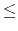

| Informants |
The ACM determines the confidence of a group of informants by surveying the confidence among them: informants assert their particular opinions about other ones, even themselves. As a result of the survey, the ACM gathers a set of assertions of the form ``X says Y is reliable'' or ``X says Y is not reliable''. If X happens to be reliable, the ACM assumes that whatever he or she says, can be interpreted to be true. Otherwise, if X is not reliable, his or her opinions may be either true or false. At the end, the ACM qualifies the situation by determining the maximum number of informants that can be reliable according to the surveyed answers.
As an example, let's assume there are four informants A, B, C and D, with the following surveyed answers: ``A says B is reliable but D is not'', ``B says C is not reliable'', and ``C says A and D are reliable''. In this case, it happens that at most two informants are reliable.
Your task is to help the ACM by writing an efficient program that, given the results of the survey, computes the maximum number of informants that may be reliable.
The problem's input has several cases. Each test case begins with a line with two nonnegative integer numbers, i ( 0 < i  20) and a ( 0 a 800), separated by blanks. i is the number of informants and a is the number of answers in the confidence survey. Then, a lines follow, each one with two integer numbers x and y ( 1 x i, 1 | y| i), separated by blanks. If y is positive, the input line means that ``informant x says informant y is reliable''. If y is negative, the then the line means that ``informant x says informant y is not reliable''. The end of the input is indicated by a line with two 0 values (an artificial case that should be ignored).
For each input case, output in a single line the corresponding answer, i.e., the maximum number of reliable informants according to the answers in the survey.
4 5 1 2 1 -4 2 -3 3 1 3 4 1 1 1 -1 3 3 1 2 2 3 3 -1 0 0
2 0 2